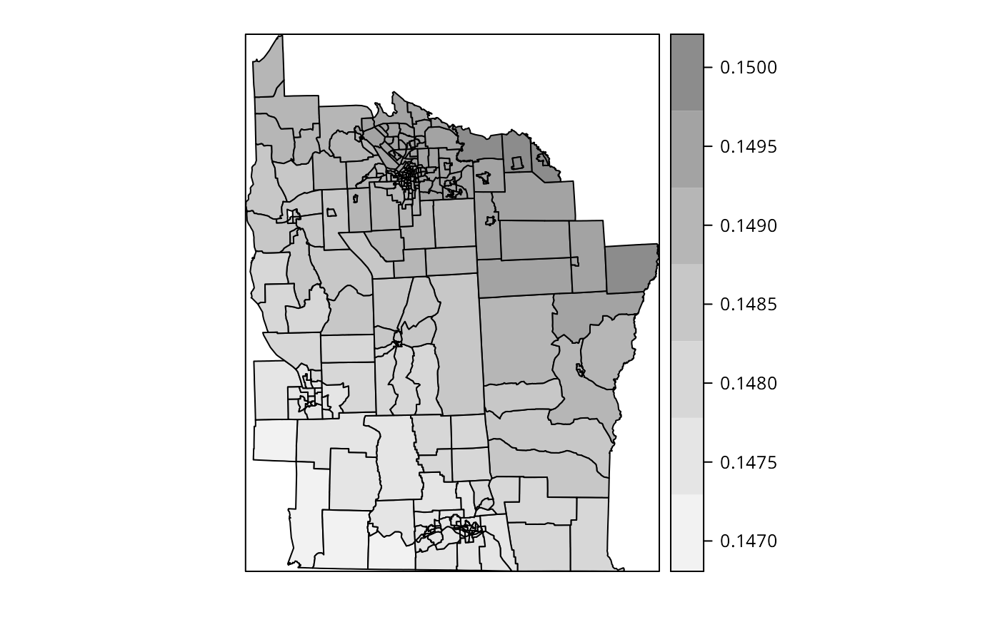

Geographically weighted regression (GWR) is an exploratory technique mainly intended to indicate where non-stationarity is taking place on the map, that is where locally weighted regression coefficients move away from their global values. Its basis is the concern that the fitted coefficient values of a global model, fitted to all the data, may not represent detailed local variations in the data adequately - in this it follows other local regression implementations. It differs, however, in not looking for local variation in data space, but by moving a weighted window over the data, estimating one set of coefficient values at every chosen fit point. The fit points are very often the points at which observations were made, but do not have to be. If the local coefficients vary in space, it can be taken as an indication of non-stationarity.
The technique is fully described by Fotheringham, Brunsdon, and Charlton (2002) and involves first selecting a bandwidth for an isotropic spatial weights kernel, typically a Gaussian kernel with a fixed bandwidth chosen by leave-one-out cross-validation. Choice of the bandwidth can be very demanding, as \(n\) regressions must be fitted at each step. Alternative techniques are available, for example for adaptive bandwidths, but they may often be even more compute-intensive. GWR is discussed by Schabenberger and Gotway (2005) and Waller and Gotway (2004), and presented with examples by Lloyd (2007).
## Loading required package: sp## The legacy packages maptools, rgdal, and rgeos, underpinning the sp package,
## which was just loaded, will retire in October 2023.
## Please refer to R-spatial evolution reports for details, especially
## https://r-spatial.org/r/2023/05/15/evolution4.html.
## It may be desirable to make the sf package available;
## package maintainers should consider adding sf to Suggests:.
## The sp package is now running under evolution status 2
## (status 2 uses the sf package in place of rgdal)## Loading required package: spData## NOTE: This package does not constitute approval of GWR
## as a method of spatial analysis; see example(gwr)
NY8 <- as(st_read(system.file("shapes/NY8_utm18.shp", package="spData")), "Spatial")
bwG <- gwr.sel(Z~PEXPOSURE+PCTAGE65P+PCTOWNHOME, data=NY8, gweight=gwr.Gauss, verbose=FALSE)
gwrG <- gwr(Z~PEXPOSURE+PCTAGE65P+PCTOWNHOME, data=NY8, bandwidth=bwG, gweight=gwr.Gauss, hatmatrix=TRUE)
gwrG## Call:
## gwr(formula = Z ~ PEXPOSURE + PCTAGE65P + PCTOWNHOME, data = NY8,
## bandwidth = bwG, gweight = gwr.Gauss, hatmatrix = TRUE)
## Kernel function: gwr.Gauss
## Fixed bandwidth: 179942.6
## Summary of GWR coefficient estimates at data points:
## Min. 1st Qu. Median 3rd Qu. Max. Global
## X.Intercept. -0.522172 -0.520740 -0.520154 -0.514439 -0.511092 -0.5173
## PEXPOSURE 0.047176 0.048032 0.049527 0.049722 0.050477 0.0488
## PCTAGE65P 3.911526 3.933832 3.959192 3.962334 3.979552 3.9509
## PCTOWNHOME -0.559358 -0.557968 -0.557682 -0.555498 -0.554563 -0.5600
## Number of data points: 281
## Effective number of parameters (residual: 2traceS - traceS'S): 4.39979
## Effective degrees of freedom (residual: 2traceS - traceS'S): 276.6002
## Sigma (residual: 2traceS - traceS'S): 0.6575073
## Effective number of parameters (model: traceS): 4.206294
## Effective degrees of freedom (model: traceS): 276.7937
## Sigma (model: traceS): 0.6572774
## Sigma (ML): 0.6523395
## AICc (GWR p. 61, eq 2.33; p. 96, eq. 4.21): 568.0103
## AIC (GWR p. 96, eq. 4.22): 561.5689
## Residual sum of squares: 119.5786
## Quasi-global R2: 0.1934333Once the bandwidth has been found, or chosen by hand, the
gwr function may be used to fit the model with the chosen
local kernel and bandwidth. If the data argument is passed
a SpatialPolygonsDataFrame or a
SpatialPointsDataFrame object, the output object will
contain a component, which is an object of the same geometry populated
with the local coefficient estimates. If the input objects have polygon
support, the centroids of the spatial entities are taken as the basis
for analysis. The function also takes a fit.points
argument, which permits local coefficients to be created by
geographically weighted regression for other support than the data
points.
The basic GWR results are uninteresting for this data set, with very
little local variation in coefficient values; the bandwidth is almost
180 km. Neither gwr nor gwr.sel yet take a
weights argument, as it is unclear how non-spatial and
geographical weights should be combined. A further issue that has arisen
is that it seems that local collinearity can be induced, or at least
observed, in GWR applications. A discussion of the issues raised is
given by Wheeler and Tiefelsdorf (2005).
As Fotheringham, Brunsdon, and Charlton (2002)
describe, GWR can also be applied in a GLM framework, and a provisional
implementation permitting this has been added to the spgwr
package providing both cross-validation bandwidth selection and
geographically weighted fitting of GLM models.
gbwG <- ggwr.sel(Cases~PEXPOSURE+PCTAGE65P+PCTOWNHOME+offset(log(POP8)), data=NY8, family="poisson", gweight=gwr.Gauss, verbose=FALSE)
ggwrG <- ggwr(Cases~PEXPOSURE+PCTAGE65P+PCTOWNHOME+offset(log(POP8)), data=NY8, family="poisson", bandwidth=gbwG, gweight=gwr.Gauss)
ggwrG## Call:
## ggwr(formula = Cases ~ PEXPOSURE + PCTAGE65P + PCTOWNHOME + offset(log(POP8)),
## data = NY8, bandwidth = gbwG, gweight = gwr.Gauss, family = "poisson")
## Kernel function: gwr.Gauss
## Fixed bandwidth: 179942.6
## Summary of GWR coefficient estimates at data points:
## Min. 1st Qu. Median 3rd Qu. Max. Global
## X.Intercept. -8.13847 -8.13586 -8.13529 -8.13467 -8.13164 -8.1344
## PEXPOSURE 0.14702 0.14776 0.14913 0.14931 0.15000 0.1489
## PCTAGE65P 3.97506 3.98180 3.98418 4.00586 4.01816 3.9982
## PCTOWNHOME -0.35726 -0.35523 -0.35453 -0.34895 -0.34601 -0.3571
spplot(ggwrG$SDF, "PEXPOSURE", col.regions=grey.colors(7, 0.95, 0.55, 2.2), cuts=6)
The local coefficient variation seen in this fit is not large either, although from the figure above, it appears that slightly larger local coefficients for the closeness to TCE site covariate are found farther away from TCE sites than close to them.
If, on the other hand, we consider this indication in the light of the figure above, it is clear that the forcing artefacts found by Wheeler and Tiefelsdorf (2005) in a different data set are replicated here.
This vignette formed pp. 305-308 of the first edition of Bivand, R. S., Pebesma, E. and Gómez-Rubio V. (2008) Applied Spatial Data Analysis with R, Springer-Verlag, New York. It was retired from the second edition (2013) to accommodate material on other topics, and is made available in this form with the understanding of the publishers.↩︎